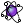

 Satellite
Component Index > NudiBranch > Animators > Satellite
Generates and animates satellite-like points around any collection of objects (Timer defined).
Inputs
| Name | ID | Description | Type |
|---|---|---|---|
| Geometry | G | A collection of geometry/objects | List of Geometry |
| SatNumber | N | Number of satellites | Integer |
| Factor | F | Orbit's radius factor | Number |
| Seed | S | Random seed number | Integer |
| Reset | R | Toggle to run/stop the animation | Boolean |
Outputs
| Name | ID | Description | Type |
|---|---|---|---|
| Satellites | S | The generated/animated satellites | Tree of Point |
Copyright © 2016 Robert McNeel & Associates.